Setup¶
In this course, you will focus on building good programming habits. This includes using a proper development environment and version control to manage your code.
You will need to install several programs and set up your computer so everything works correctly together.
Reasons for workflow
There are many reasons for using this workflow, but most are outside the scope of this course.
In simple terms, this workflow helps avoid common mistakes that beginners often make. This means you can spend more time writing code and less time fixing problems.
Programming Language - Python¶
The first step is to install Python, the programming language you will be using.
If you have used beginner IDEs like Thonny or Mu, Python was already included. In most real-world setups, you need to install Python yourself.
Versions
Python has multiple versions. When this course was created, Python 3.11.4 was the latest version.
New versions of Python 3 are released regularly, usually once per year. For this course, the exact version is not critical, so you can install the latest available version.
The best way to install Python depends on the operating system you are using.
Windows¶
The easiest way to install Python on Windows is through the Microsoft Store. Search for Python and install the latest version available.
This method:
installs Python
keeps it updated automatically
adds Python to your system path so it can be used anywhere
After installing, check that it worked by running Python on your computer.
macOS¶
To install Python on macOS, go to the Python website and click the yellow Download Python 3.X.X button. The site will automatically detect your system and download the correct installer.
Open the downloaded file and follow the steps to install Python.
After installing, check that it worked by running Python on your computer.
Version Control¶
Version control is a system that tracks changes to your files over time. It lets you save different versions of your work and return to earlier versions if needed.
You can think of it like OneDrive, but it is not automatic. After saving your work on your computer, you must choose when to sync it to the cloud.
In this course, you will only use the basic features, but it is an important part of developing good programming habits.
Git¶
Git is the industry-standard version control system. It is free and open source, and is used to track changes in files over time. It is most commonly used for code, but it works for any project with files.
When using Git, your code is stored in a special folder called a repository (repo). A repo tracks all changes you make, allowing you to go back to earlier versions if something breaks.
In this course, you will not use Git directly. Instead, it will be built into the tools you use. You still need to install it.
To install Git:
Go to the Git website: https://git-scm.com/
Download the Latest Source Release
Run the installer
macOS users: choose the Binary Installer
Accept all default settings during installation
GitHub¶
GitHub is the service you will use to store and sync your repositories in the cloud. The free version is sufficient for this course.
Create an account:
Go to https://github.com/
Click Sign up in the top right corner
Use your school email to create your account (you can change it later)
Git vs GitHub
Git is the tool that tracks changes to files and manages repositories on your computer. GitHub is a website that stores those repositories online and adds features for sharing and collaboration.
While GitHub is the most widely used platform, there are other similar options such as GitLab and Bitbucket.
GitHub Desktop¶
GitHub Desktop is an application that makes it easier to use GitHub without needing to use commands.
To install GitHub Desktop:
Click the purple Download button
Run the installer
macOS: move the app and restart when prompted
Accept all default options
After installing:
Open GitHub Desktop
Sign in using your GitHub account
IDE¶
An Integrated Development Environment (IDE) is a program that helps you write, edit, and test your code in one place.
It acts as a workspace for programming, where you can:
write and edit code
get suggestions and see errors as you type
organise your files
run your programs and see the results
An IDE combines these tools into a single application, making coding easier and more efficient.
Visual Studio Code¶
Visual Studio Code (VS Code) is the IDE you will use for this course.
Alternative to VS Code
Visual Studio Code is a professional IDE with many features beyond what you will need in this course. It also interacts with deeper parts of your computer, which can sometimes make setup more difficult.
If you prefer a simpler option, you can use Thonny instead. Instructions on setting up Thonny are provided.
To install Visual Studio Code:
Click the Download button
Run the installer
Accept all default options
VS Code Extensions¶
Python Extension¶
Visual Studio Code can be used for many programming languages. To use it for Python, you need to install the Python extension.
To install the Python extension:
Click Install
Confirm that you have VS Code installed
Accept the prompt to open VS Code if it appears
Material Icon Theme¶
By default, Visual Studio Code does not show icons in the file panel, which can make it harder to tell files and folders apart.
To fix this, install the Material Icon Theme, which adds clear icons to your files and folders.
Go to the Material Icon Theme on the Visual Studio Marketplace
Click Install
Acknowledge that you have VS Code
You may need to accept the prompt to open VS Code
GameFrame and resources¶
GameFrame
GameFrame was developed by Steven Tucker, a Queensland teacher.
If you want the latest version of GameFrame, you can find it on his GitLab repository: https://gitlab.com/tuxta/gameframe
You will use a repository that contains a modified version of GameFrame, including all the files needed for this course.
You will clone (copy) this repository from GitHub onto your computer.
To do this:
Go to the Space Rescue Resources repo
Click on the green Code button
Click on the copy button beside the https url
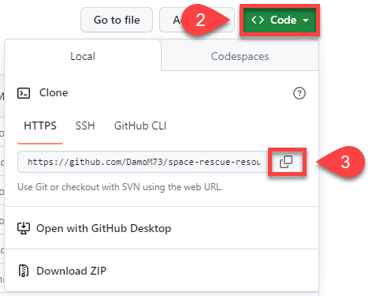
Open GitHub Desktop
Open the File menu
Click Clone Repository
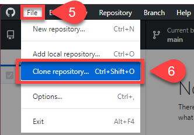
Choose the URL tab
Paste repo URL into URL or username/repository box
Click Clone
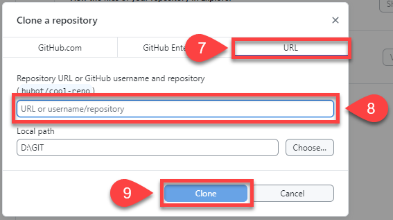
The repo should now be copied onto your computer and ready for use.
Opening repo in VS Code¶
You will use GitHub Desktop to manage your programming workflow.
It will be used to:
open your code in Visual Studio Code and set up the workspace
save your work (commit) to your local repository
sync (push) your changes to GitHub (origin)
Git and GitHub terminology
Git and GitHub use specific terms. These are the ones you need to know:
Repository (repo): A special folder that stores your project files and their history
Commit: A saved snapshot of your changes, with a message explaining what was done
Pull: Getting the latest changes from others and updating your copy
Push: Sending your changes to the online version of the project
Remote: The online version of your project (in this course, on GitHub)
Clone: Copying a project from the remote location to your computer
Local: The version of the repo stored on your computer
Origin: The main remote copy of your repo
Fork: Creating your own copy of someone else’s project
Note: “others” can include you working on a different computer.
To use GitHub Desktop to open Visual Studio Code:
Open GitHub Desktop
Check that the Current repository (top left) is space-rescue-resources
Click Open Visual Studio Code
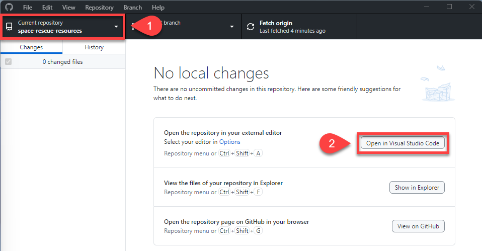
Visual Studio Code should now open. In the file panel on the left, you should see:
space-rescue-resources
all the project files shown in the image below
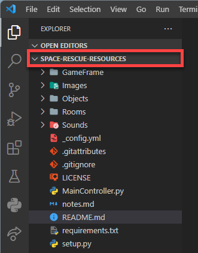
Virtual Environment¶
Python virtual environments let you keep different projects separate.
Each project has its own space, with its own Python setup and libraries. This means changes in one project will not affect another.
You can think of it like separate rooms:
each project has its own space
each space can have different tools (libraries)
nothing from one project interferes with another
Using virtual environments keeps your work organised and prevents conflicts between projects.
requirements.txt
The requirements.txt file lists all the extra libraries needed for this project.
You can add more libraries to this file. To install everything listed in it, run:
Windows:
pip install -r requirements.txtmacOS:
pip3 install -r requirements.txt
Create Virtual Environment¶
Windows Users
If you are using Windows, you may need to run a PowerShell command before creating a virtual environment for the first time.
Steps:
Open PowerShell as Administrator
Run the command:
Set-ExecutionPolicy -ExecutionPolicy RemoteSigned -Scope CurrentUser
You should only need to do this once, unless you are using a different computer.
To create a virtual environment in Visual Studio Code:
Press Ctrl/Cmd + Shift + P
Type Python
Select Python: Create Environment…
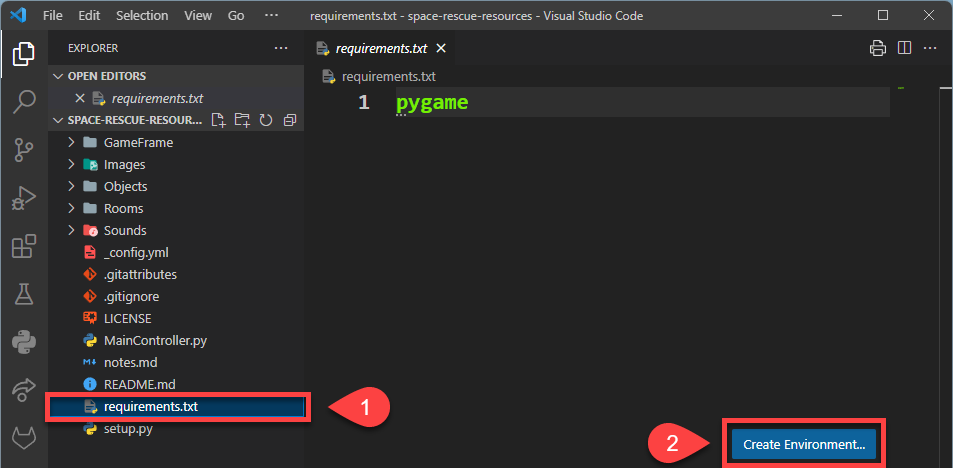
Select the Venv option at the top
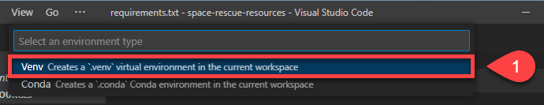
Select the latest version of Python that you installed
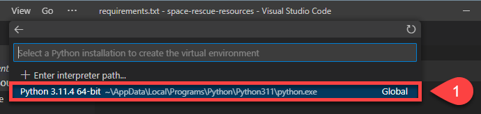
Tick the box next to requirements.txt, then click OK
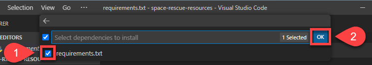
Visual Studio Code will now:
create your virtual environment
perform any required updates
install the libraries listed in requirements.txt
activate the virtual environment
Check Virtual Environment¶
To check that your virtual environment is active in Visual Studio Code:
Look at the status bar in the bottom left
Check for the Python version and the name of the virtual environment
If both are shown, your virtual environment is active.
Make first commit and push¶
Open the README.md file
Replace its contents with the text provided below
Save the file
# SPACE RESCUE
Try to save the helpless astronauts who are being left stranded in space by the evil Zork.
In GitHub Desktop, enter “Made first change” in the Summary (required) field
Click Commit to main
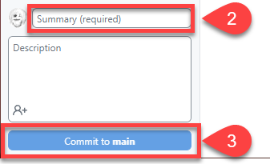
Click Push origin (you will receive an error)
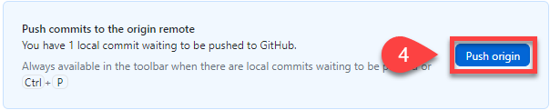
Select Fork this repository
Choose For my own purposes, then click Continue
Click Push origin again